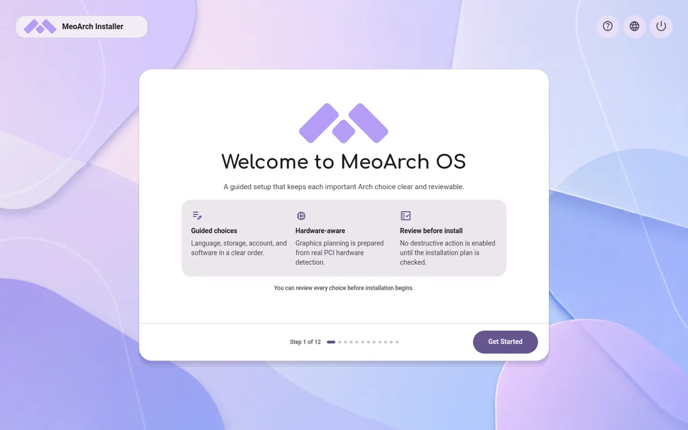
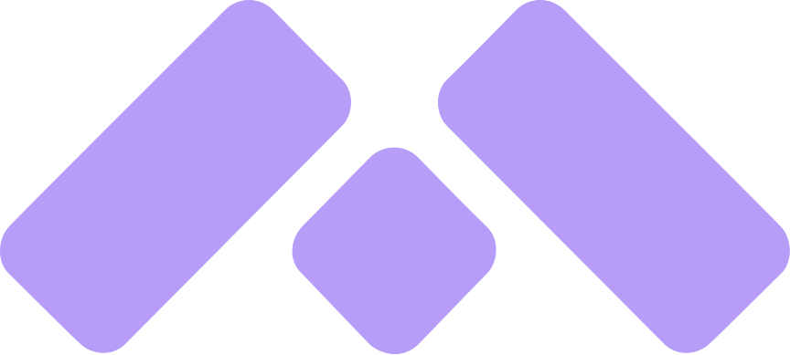
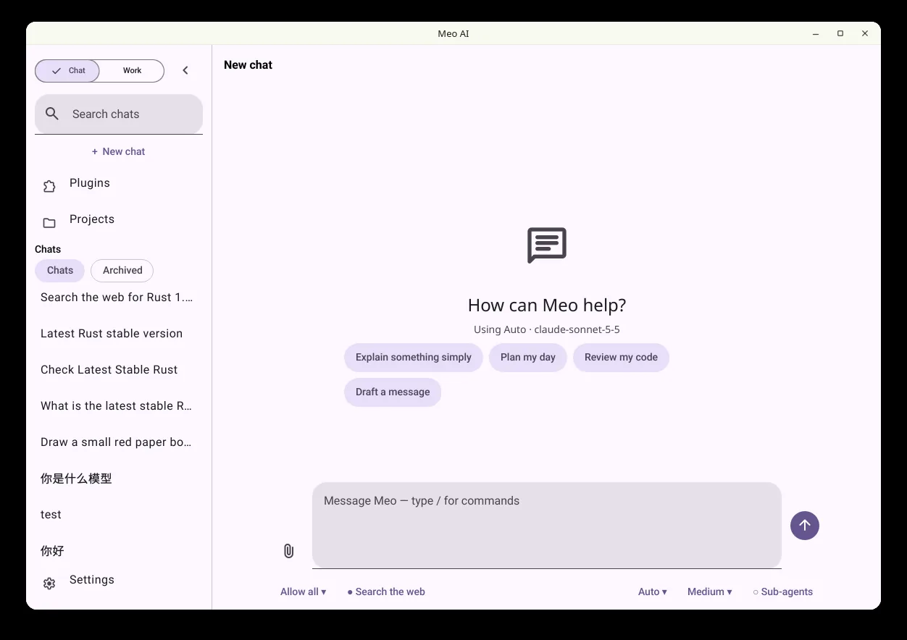
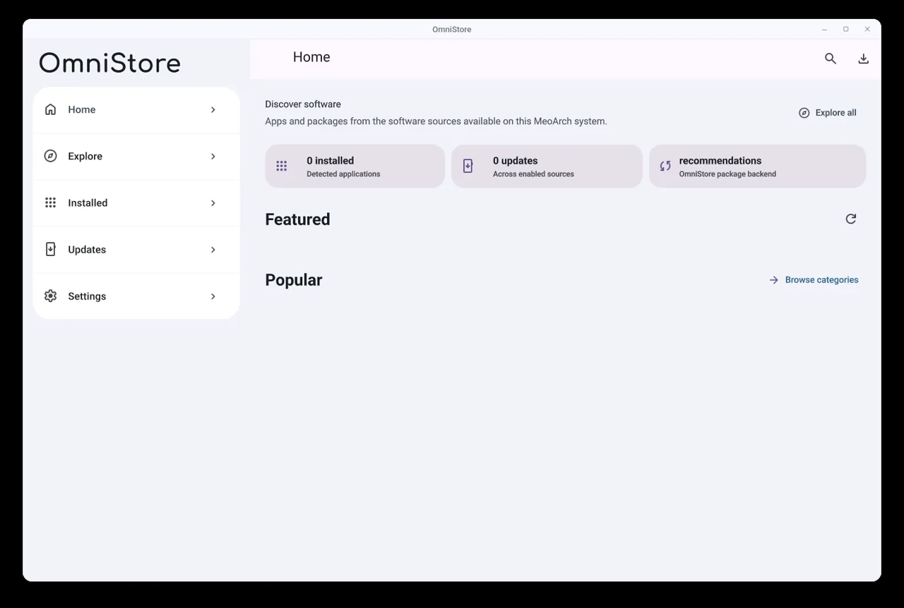
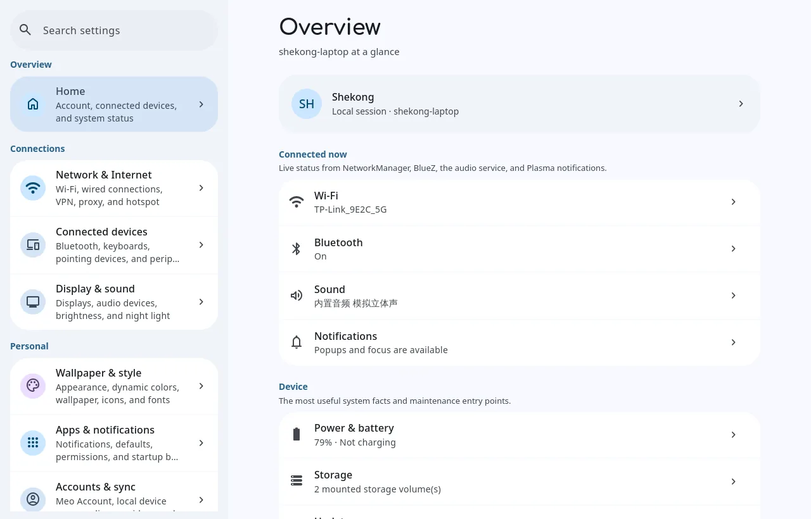
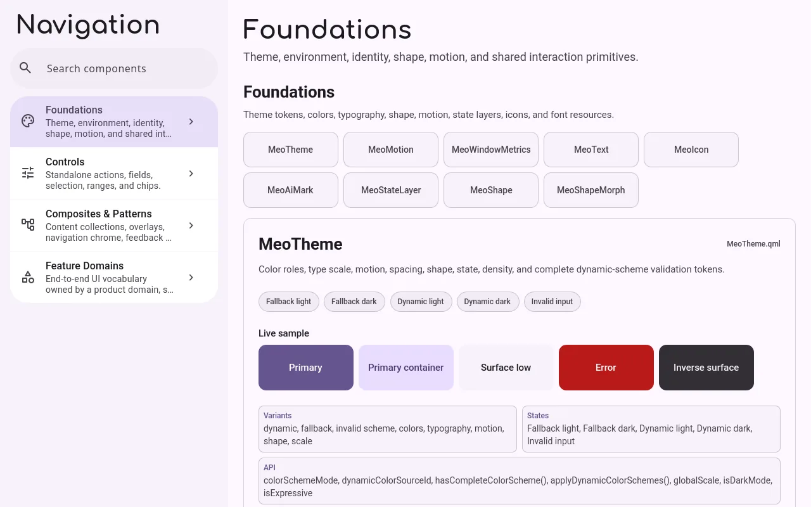

测试版 ISO 可下载
MeoArch OS
基于 Arch Linux 的桌面系统：设置会解释自己，高风险修改可以预览和恢复，底层仍然是真正的 Linux。

MeoArch GitHub产品
下面这些都在公开开发中，状态各不相同，卡片上会写明。截图来自开发版本。

基于 Arch Linux 的桌面系统：设置会解释自己，高风险修改可以预览和恢复，底层仍然是真正的 Linux。


应用商店：发现软件来源，管理软件的安装与更新；原生 Qt/QML + MeoUI 客户端，Python 后端。
sudo pacman -S omnistore-bin (Stable)

日常系统设置：基于 MeoUI，使用 KDE 和 Linux 已验证的系统组件，不取代 NetworkManager、BlueZ、PipeWire 等。
sudo pacman -S meo-settings (Stable)

MeoArch 共用的 Qt Quick / QML Material Design 3 设计系统：主题、组件和模式，让各个应用保持一致。MIT 许可。
sudo pacman -S meoui-qml (Stable)
MeoArch 的登录与显示管理器：在 KDE Plasma Login Manager 6.8 之上只改外观，认证和会话逻辑保持上游。
sudo pacman -S meo-plasma-login-manager (Stable)
安装
MeoArch 仍在开发中，请先在虚拟机或备用设备上试用，并备份重要数据。
新装一台机器或虚拟机。目前只有测试版（2026-10-25 构建）。
从 SourceForge 下载SHA-256ca2a6c4e457407aed4f7338fe904d8dc186c290300523466fc070a079ec8face
已有 Arch？一条命令配置已签名的 Meo 软件源并安装 Meo 桌面。
curl -fsSL https://raw.githubusercontent.com/QwQdoge/MeoArch-os-workspace/main/scripts/install.sh | bash -s -- --full加 --beta 使用 Beta 通道。运行前请先阅读脚本。之后单个应用用 pacman -S 安装。
AUR 上目前有两个独立可构建的包；其余软件依赖 Meo 软件源，请用 pacman 安装。
yay -S meoui-qml
yay -S meo-plasma-login-managermeo-plasma-login-manager 会替换 plasma-login-manager，安装前请确认。
更多项目
除了 MeoArch 本身，还有一些公开的小项目。
关于
MEO = Modern · Expressive · Open。交互和呈现要现代，动效和视觉语言要有表现力，Linux 的基础和用户的控制权要保持开放。
为什么是 Arch？因为自由和新：滚动更新让软件保持较新，也不替你做决定。MeoArch 在这份自由之上，加一层更容易理解、更容易恢复的操作界面。
适合日常使用吗？目前还不建议作为唯一的日常系统，它仍在开发中。欢迎试用、反馈，也欢迎一起做。